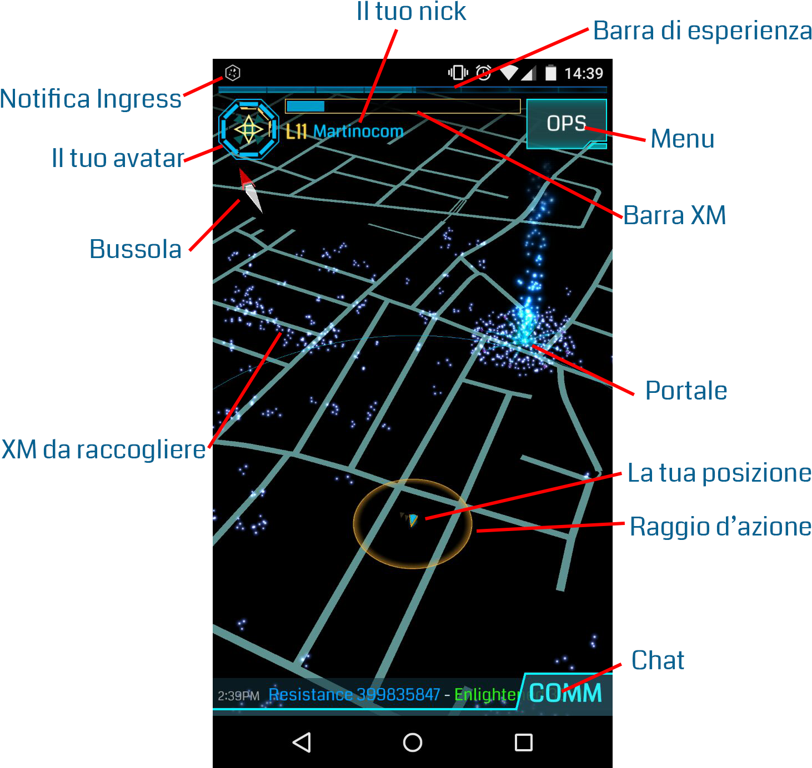

Ingress
Intro
Se non hai voglia di leggerti tutto il papiro, leggi le sezioni più importanti, quali
OGGETTI,
AZIONI e
CONSIGLI.
E comunque ricorda... questo è un gioco: divertiti!
Una guida completa, ben fatta, con immagini ecc... la puoi trovare
[QUI] (Smurfing Lessons)
Il gioco
Ingress è un gioco di realtà aumentata, sviluppato da Niantic (collegata in qualche modo alla Google). E' uno dei
pochi giochi basati su GPS realmente fatti bene, anche se su questo "bene" c'è veramente da discutere. Sì, non
hai letto male: per giocare a Ingress ti devi alzare dal tuo comodo divano e uscire di casa. Devi conquistare
posti strategici, per far vincere la tua squadra (Resistenza, spero).
Hai scaricato Ingress? Benissimo. Il tuo telefono ora è diventato uno scanner, ufficialmente correlato con
Ingress. Attraverso il tuo cellulare agirai in questo nuovo mondo di realtà aumentata. Nello scanner potrai
interagire tra varie schermate di gioco. La prima sarà ovviamente la mappa, dove potrai vedere tutto il mondo che
ti circonda. Da li potrai interagire con tutto.

Dal menù puoi accedere a varie schede:
-
inventory
In parole semplici, il tuo inventario. Qui vedrai tutti gli oggetti da te posseduti.
-
agent
Il tuo profilo; verrai a conoscenza delle statistiche e medaglie ottenute durante il gioco.
-
intel
Schermata che riassume i punteggi globali e regionali (quindi, di una cella). Utile per
vedere chi sta vincendo attualmente, cioè, chi ha piu "Mind Unit" (MU) catturate.
-
missions
Permette di accedere alle missioni più vicine disponibili. Le missioni sono belle da
fare, ma non portano alcun vantaggio nel gioco.
-
training
Un piccolo tutorial. Sinceramente, non spiega molto.
-
recruit
Scheda che ignoro altamente; permette di inviare SPAM ai tuoi amici per invitarli a
giocare a Ingress (a sto punto diglielo a voce, no?)
-
community
Scheda che ignoro altamente; permette di accedere a varie pagine connesse a Ingress,
quali G+, Facebook ecc...
-
passcode
Ogni tanto su internet/chat girano dei "Passcode": codici che, inseriti in quella scheda,
permettono di ottenere alcuni oggetti gratis.
-
device
Sono le impostazioni del gioco.
Oggetti
Quasi tutti gli oggetti dei gioco variano dal livello 1 al livello 8. Ovviamente, più sale di livello, più è
potente. Alcuni oggetti non hanno un livello. Avranno quindi un indicatore di "rarità": COMMON (comune), RARE
(raro) e VERY RARE (molto raro).
-
Resonator
Cariche, che matengono attivo un portale. Più è alto il livello, più carica hanno.
-
XMP
Bombe, la cui onda d'urto si propaga in cerchio. Più è alto il livello, maggiore è il danno e il
raggio.
-
Ultra Strike
Bombe di precisione, di cortissimo raggio ma concentrata potenza. Servono più che altro
per spaccare scudi/mod o resonator, quando qualcuno dall'altra parte ricarica.
-
Power Cubes
Quando sei a corto di XM, usa pure un cubo per ricaricarti. Un cubo speciale chiamato
LAWRSON permette di triplicare la tua barra di XM: è un oggetto raro, quindi usalo solo in caso di necessità.
-
Portal Key
Chiave di un portale. Essenziale e preziosa in alcuni casi, inutile in altri.
-
ADA Refactor
Virus, oggetto molto raro nel gioco. Usando un ADA su un portale verde, esso diventa
automaticamente BLU, mantenendo tutte le mod/resonator intatti, e mettendo il tuo nome sul portale. I
link/field connessi si rompono, ma non danno esperienza.
-
Jarvis Virus
Virus, oggetto molto raro nel gioco. Usando un JARVIS su un portale blu, esso diventa
automaticamente VERDE, mantenendo tutte le mod/resonator intatti, e mettendo il nome __JARVIS__ sul portale. I
link/field connessi si rompono.
-
Capsule
Utili per contenere chiavi e oggetti. Non incrementano la capacità dell'inventario; è solo
un modo per organizzarlo. Avendo una chiave dentro la capsula puoi pescarne un altra da un portale, dopo un
hack. Non puoi infatti prendere un'altra chiave di un portale, se ne hai già una nell'inventario: o la butti
per terra, o nella capsula.
-
MUFG Capsule
Variante della capsula stessa, permette di contenere 100 oggetti e di moltiplicarli
dopo un certo periodo di tempo. Basta avere spazio a sufficienza sia per non superare la capacità sia
l'inventario, sia della capsula stessa (viene consigliato di tenere 90 oggetti nella capsula e avere spazio
libero in inventario, generalmente).
Mods
Mod sono particolari item che permettono di aumentare delle capacità di un portale. Possono essere di diversa
"rarità".
-
Resonator
Cariche, che matengono attivo un portale. Più è alto il livello, più carica hanno.